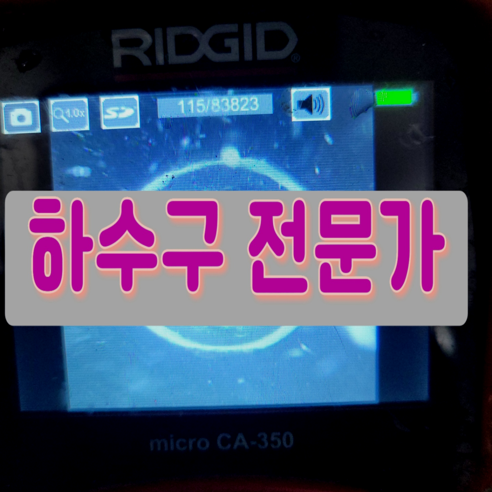
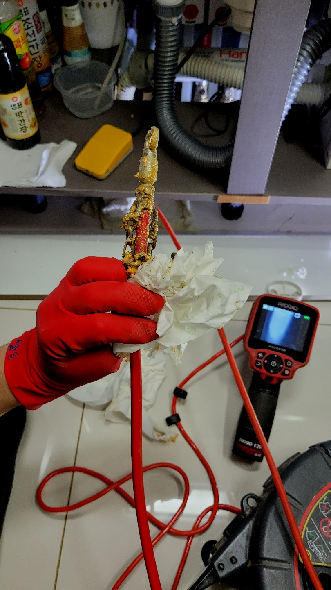
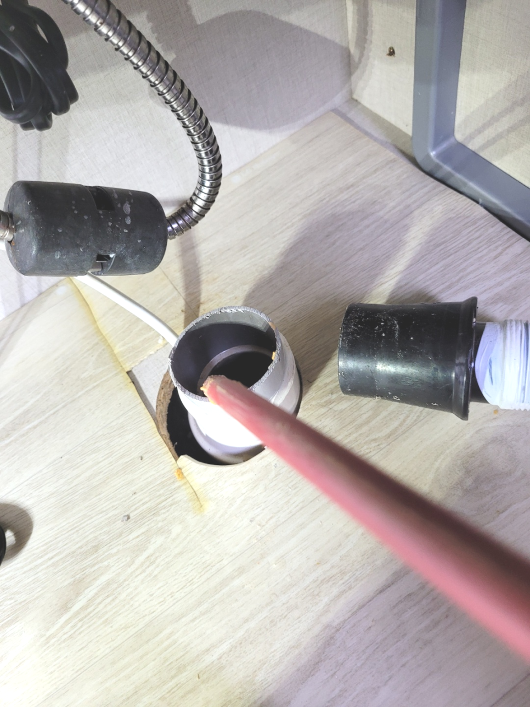
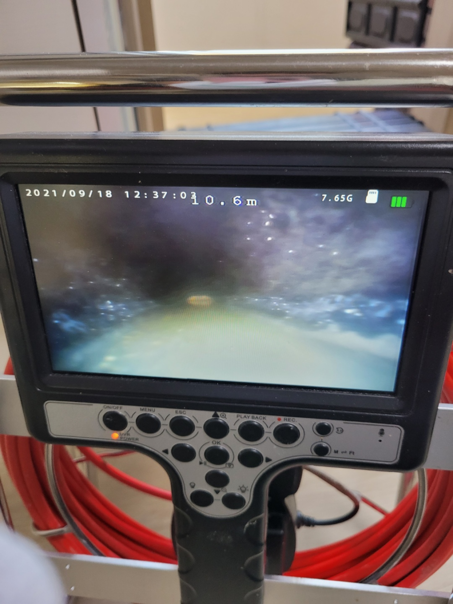
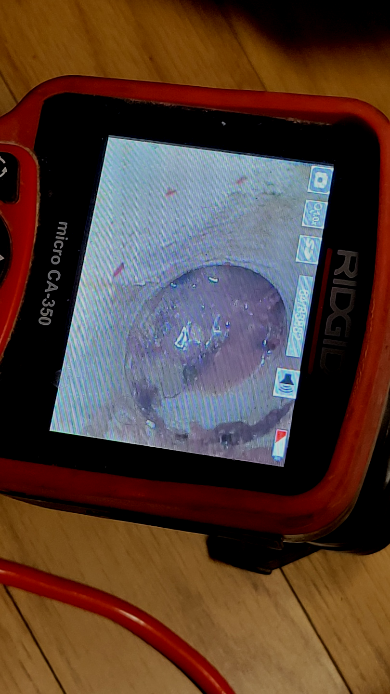
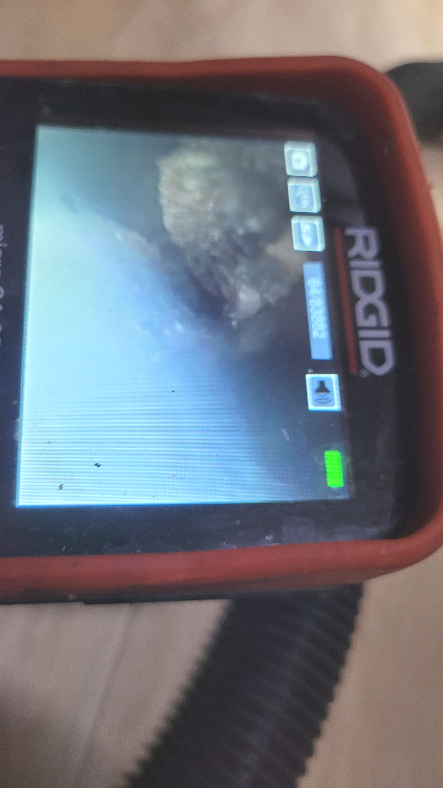
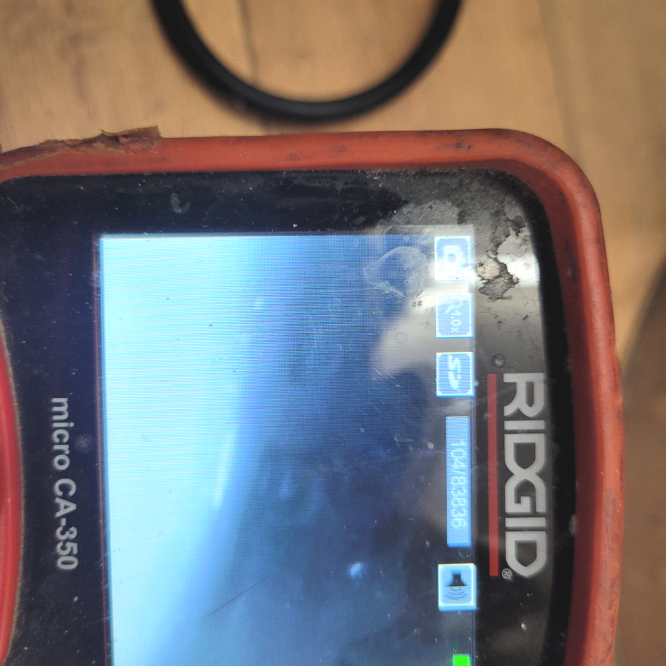

🏠 오산 중앙동 주방하수구막힘 대원동 씽크대역류 하수구뚫는곳 설비
오산 원동 싱크대막힘 전문 시공 후기

📋 작업 개요
- 위치: 오산 원동, 원동, 오산
- 서비스 유형: 싱크대막힘, 변기막힘, 하수구막힘, 배관막힘, 누수수리, 역류해결, 뚫는업체, 배관청소
- 작업 일시: 2023. 11. 13. 23:41
- 업체명: 하수구수사대 (010-5615-2118)
🔍 문제 상황
반갑습니다^^
설비전문업체 "하수구수사대"를 찾아주셔서 고맙습니다^^
물을 사용하는 모든 공간에는 필수로 배출구들이 설치되어 있답니다. 사용한 물을 배수하고 새롭게 사용하는 물을 공급하는 역할을 합니다.
퇴수막힘을 셀프로도 가능하다고 생각하셨고 그렇게 해결을 몇 번 하셨지만 이번에는 도저히 그걸로는 해결이 되지 않아서 바로 출동하게 된 거죠. 우선 악취가 너무 심하게 나서 들어가는 순간 너무 당황스러웠고 일단 퇴수역류까지 하고 있어서 이것부터 해결하기로 하였습니다.
오산 중앙동 주방하수구막힘 대원동 씽크대역류 하수구뚫는곳 설비

🔎 원인 분석
💡 전문가 진단: 오산 중앙동 주방하수구막힘 대원동 씽크대역류 하수구뚫는곳 설비
상태가 더욱심각해지면 물이 새는 증상이 나오게 되는데요 안고치고 방치한다면 여러배관에 같은 증상이 나타나거나 각종 냄새들이 온 집안과 공간을 괴롭히게 됩니다.
어떤 일이든 비 전문가는 절대 무리하게 뚫기 위한 시도를 해서는 안됩니다. 인터넷에서 쉽게 얻을수 있는 배수정보들을 대부분 미비한 효과에서 그치고 근본적인 원인은 해결해 주지 못합니다.
배수구 뚫기 위해 내시경을 투입해서 보니 엮인 배관으로 이어진 곳에 침전물들이 누적되어 있는 것을 확인시켜드렸어요. 통로 깊숙이 들어가 있기에 막인 것을 알아차리는데 꽤나 어려움이 있었을 듯해요.
업체 선정 시에도 그러한 상황 때문에 서둘러서 내방할 수 있는 곳을 찾게 되실 텐데 저희는 서울 경기 인천 어디든 바로 출동할 수 있는 배수관팀이 존재하기 때문에 한 시간 안으로 도착하여 작업을 해드립니다.
무심하게 골랐다가 물이 흐르지 않아 전화 걸어보면 돈을 다시 내야 하는 경우들도 빈번하죠. 모르는 일 취급하는 건데 잘못 사용한 바가 없는데도 불구하고 며칠 안에 재발하게 되는 것은 퇴수구업체의 과실이랍니다.

🔧 작업 과정
보통배관가 막히게 되면 초반에는 물이 배수되는 속도가 느려지다가 시간이 흐를수록 그 불편함은 더욱 커지기 마련이라서 신속하게 해결하시는 것이 좋습니다
배수관으로 배수가 안되거나 느리게 넘치고 있다면 이러한 것들을 고쳐드리는 경력자를 찾아내서 실력자를 이용하셔야 합니다.배관막힘 무수히도 많은 업체들이 있는데 업차마다 다른 점이 있어서 신중을 기해야 합니다.
기름이 우리가 생각할때는 액체상태지만 요리를 하고 난 후에는 식재료의성분이 섞인 기름이 됩니다. 조리를 한 뒤에느 기름이 굳으면 하얗게 변하게 된답니다. 이러한 기름은 하수배관 속에서 굳으면 벽에 붙어 단단하게 고정이 됩니다.
이와같은경우에 다시 배관 안쪽 부분에 잔해물들이쌓이며 재발문제를야기시키죠 저희들은 혹여다른 베테랑들이방문해 성공하지못한경우라도 사양않고 오로지문제 해결만을위해 불러주시면 달려가고있습니다
하수도전문업체를 찾아서 간단하게 수리할수있었던 문제들도 이때문에 심화되기만해요.이러하기에 금액절약을위해 무리하면서 시도해보시는것은 일단 멈춰주시는게좋아요.
꽉막히거나 물샘증상이 발생하는것을 발견하셨으면 확실하게 퇴수구막힌겁니다.뚫기위해서 무작정 쓰시고 해결하려하시는데요.잘못된방법이 아니라고는못하지만 잘못되게되면 외려 증상이심화 되어버립니다.
그전에 다른회사에 연락했었으나 흡족하지않으셨다면 무상수리를제공하고 확실하게뚫는 저희에게연락주시면 완벽히 세밀하게 처리해드리고 하수관수리해드리는것을 약속드리겠습니다
오래된 기름 슬러지도 배관 스케일링을 할 시기를 지나 이미 굳은 상태였기에 차곡차곡 쌓인 그동안의 이물질과 함께 제거를 하기 위해 퇴수구배관 스케일링 작업을 시작했습니다.


✅ 작업 완료
배출구막힘으로 인한 불편은 대부분 비슷하지만 정작 불편을 초래한 원인에는 차이가 있기 때문에 이를 제거하고 수습하는 방법도 상이합니다.
빠른 방문과 해결을 위해 수도권 전지역 어디든 네트웍이 구축되어 있으니 언제든지 연락주시면 완벽하게 해결해 드리겠습니다^^
#하수구막힘 #하수구뚫음 #하수구역류 #씽크대막힘 #싱크대역류 #오수관막힘 #하수구청소 #욕실하수구막힘 #변기막힘 #하수구뚫는비용 #싱크대수리 #화장실막힘




⚠️ 베란다 누수 및 방수 관리 방법
- ✅ 비가 많이 올 때 창틀 주변이나 아래층 천장에 얼룩이 생기는지 정기적으로 확인해 보세요.
- ✅ 우수관 주변 실리콘 마감이 들뜨거나 깨진 틈새가 있는지 손상 여부를 수시로 체크하세요.
- ✅ 베란다 바닥 타일의 줄눈(메지)이 소실되면 그 틈으로 물이 침투하여 누수가 유발됩니다.
- ✅ 누수 의심 증상 발견 시 방치하면 아래층 손실이 커지므로 즉시 전문가의 진단을 받으십시오.
💡 핵심 정리
- 확실한 장비 작업(내시경 점검 및 샤프트 스케일링)으로 원인을 뿌리 뽑습니다.
- 작업 후 1년 이내에 동일한 부위 재발 시 100% 무상 A/S 서비스를 보장합니다.
- 서울 · 경기 · 인천 전 지역에 24시간 언제든 긴급 출동할 수 있도록 항시 대기 중입니다.
❓ 자주 묻는 질문 (FAQ)
🚨 오산 원동 싱크대막힘 문제로 고민이신가요?
정확한 원인 진단과 확실한 시공으로 재발 없는 해결을 약속드립니다.
24시간 긴급 출동 | 서울 · 경기 · 인천 전지역 | 1년 내 재발 시 무상 A/S